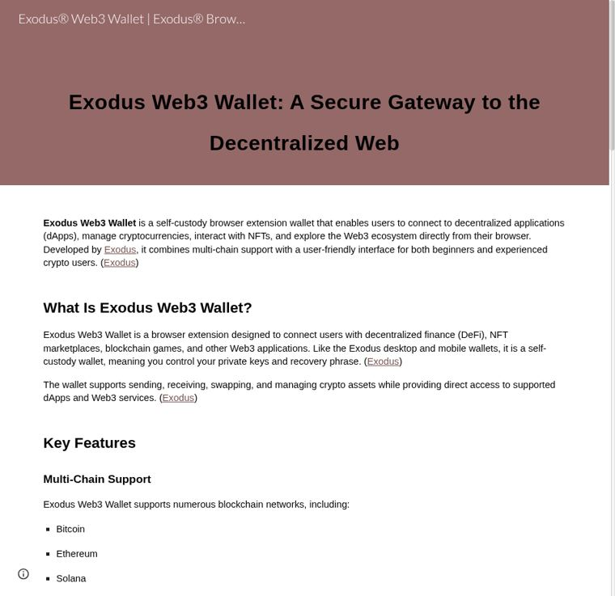
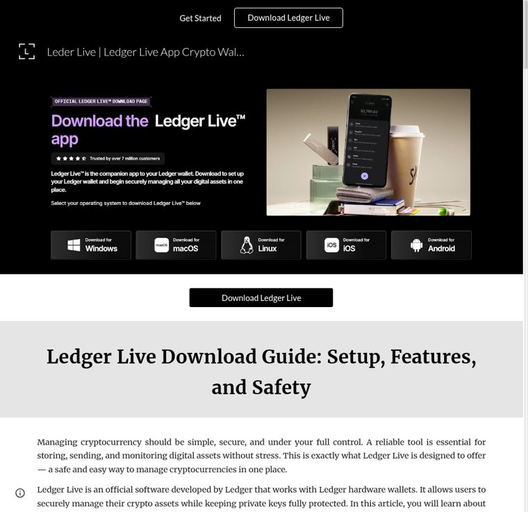
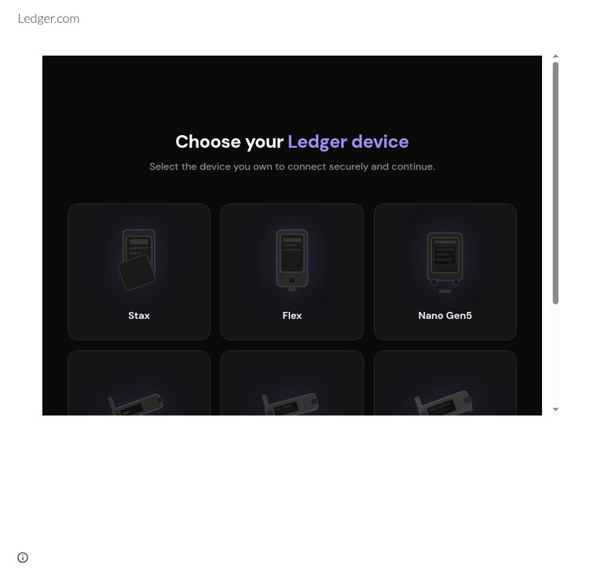
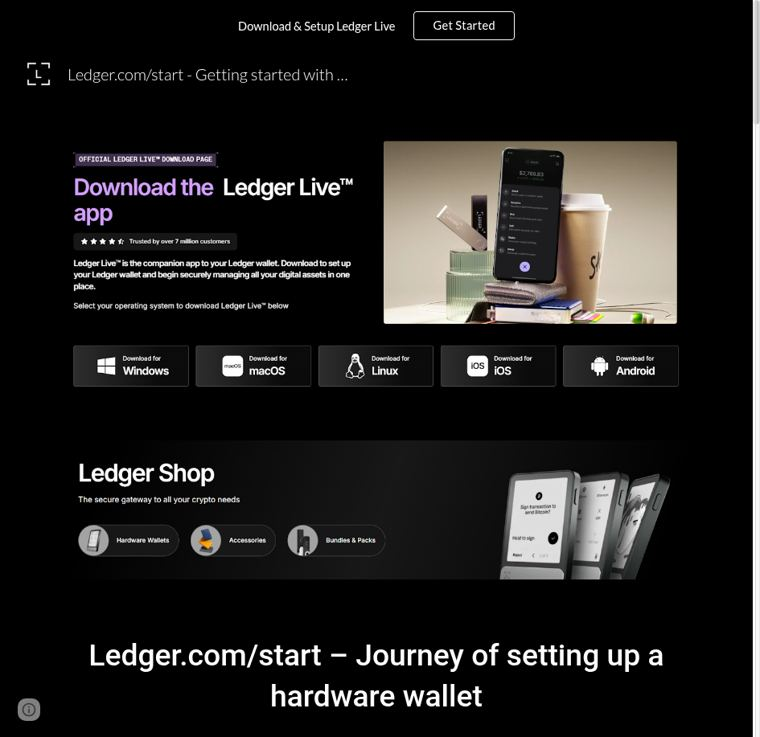
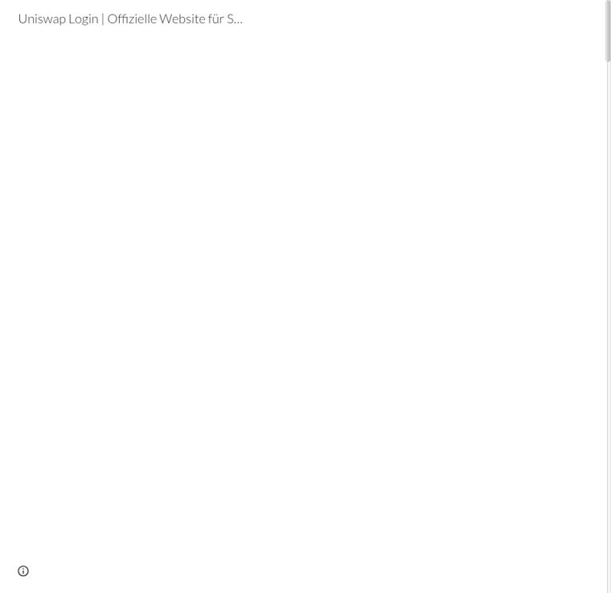
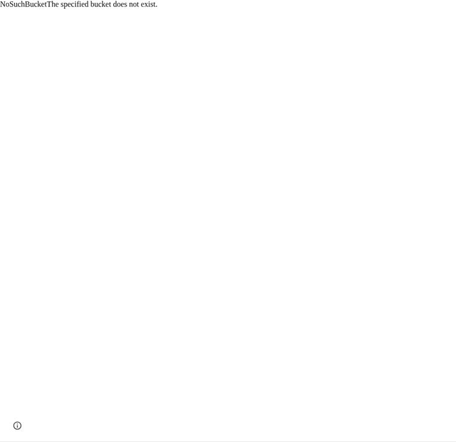
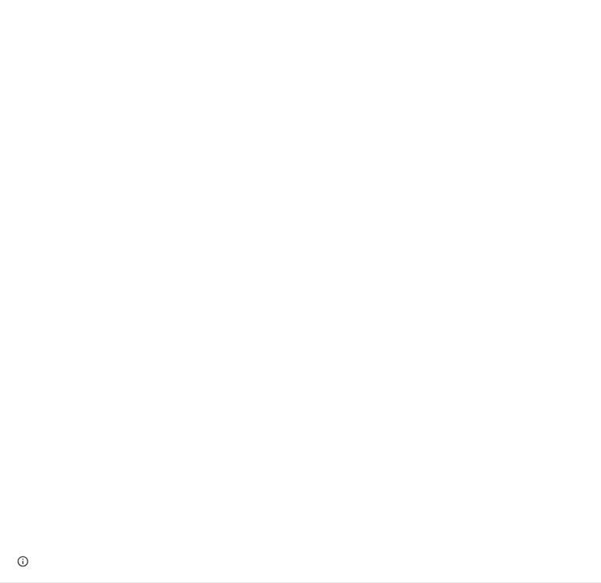
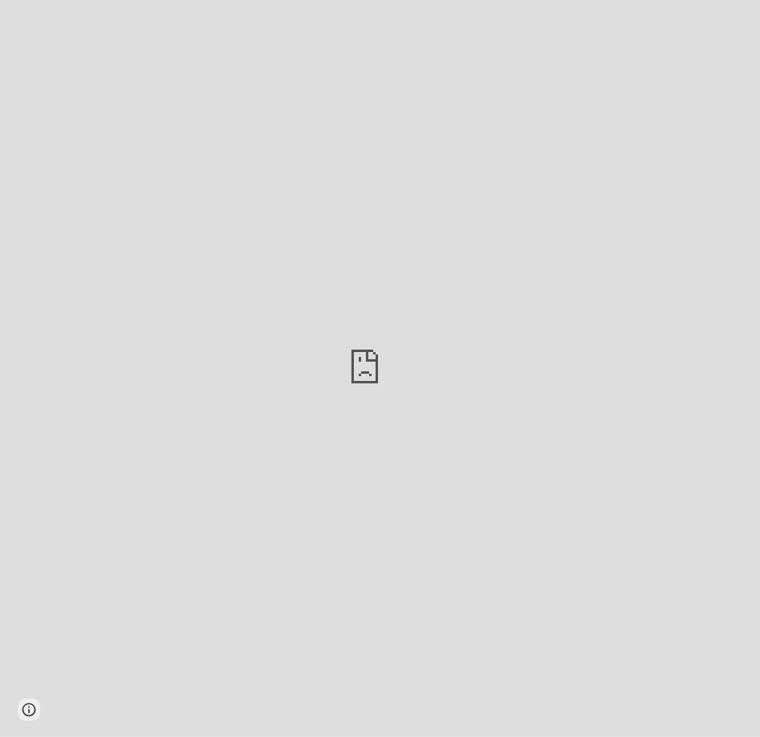
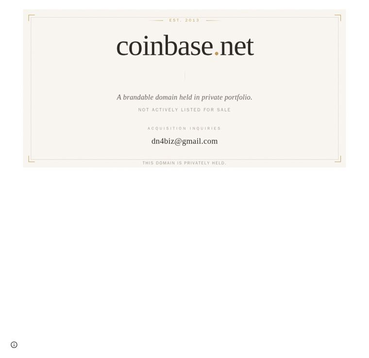
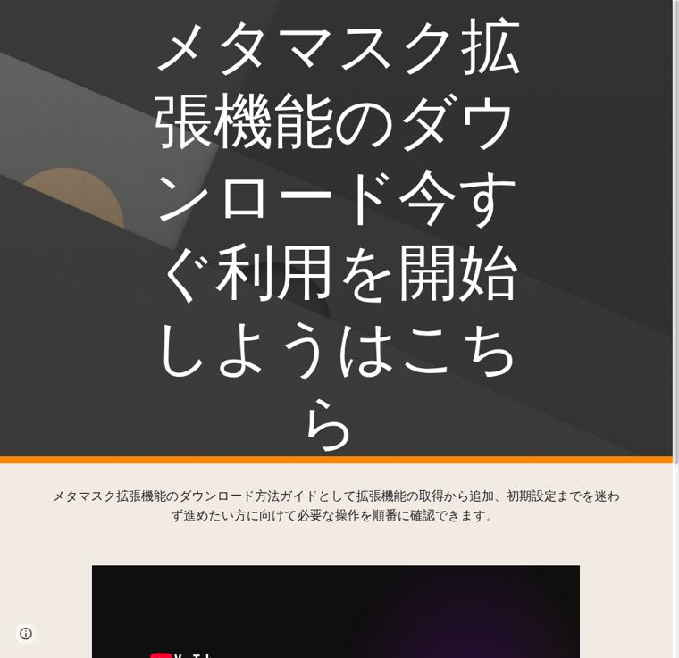

B · Case file — every live page, one block each
One entry per live phishing page, in the format you asked for: the google.com URL, the payload domain behind it, registration dates, where it serves, its advertising status, and the victim’s journey. Full source, headers and screenshots for each are in the evidence ZIP.
ACTIVE HARVESTER — asking for seed phrases now
BROKEN SHELL — live page, payload host dead
BRAND IMPERSONATION — no live harvest seen
ACTIVE HARVESTER
1. Exodus — /view/exodus-web3wallet-/home
| Landing domain (what the URL shows) | google.com — via sites.google.com |
| Full landing URL | https://sites.google.com/view/exodus-web3wallet-/home |
| Page title | Exodus® Web3 Wallet | Exodus® Browser Extension |
| Serves in | all 10 countries probed (BR, DE, ES, FR, GB, IN, JP, NL, TR, US) |
| Advertising status | No live ad observed in 6 SERP checks across 3 countries (see §17) |
| Evidence in the ZIP | evidence/sites_google_com_view_exodus_web3wallet_home/ — page source, headers, 10 screenshots |
User journey. A user searches for Exodus and clicks a result whose visible URL is google.com. It lands on this page, hosted on Google Sites, cloned to look like Exodus. The page itself asks for the wallet recovery phrase; the 24 words are sent to the operator, who then empties the wallet.

ACTIVE HARVESTER
2. Exodus — /view/exodus-wlt/home
| Landing domain (what the URL shows) | google.com — via sites.google.com |
| Full landing URL | https://sites.google.com/view/exodus-wlt/home |
| Page title | Exódus® Web3 Wallet | Exódus® Browser Extension |
| Serves in | all 10 countries probed (BR, DE, ES, FR, GB, IN, JP, NL, TR, US) |
| Advertising status | No live ad observed in 6 SERP checks across 3 countries (see §17) |
| Evidence in the ZIP | evidence/sites_google_com_view_exodus_wlt_home/ — page source, headers, 10 screenshots |
User journey. A user searches for Exodus and clicks a result whose visible URL is google.com. It lands on this page, hosted on Google Sites, cloned to look like Exodus. The page itself asks for the wallet recovery phrase; the 24 words are sent to the operator, who then empties the wallet.
ACTIVE HARVESTER
3. Ledger — /ledgerstart-web.com/ledger-live/home
| Landing domain (what the URL shows) | google.com — via sites.google.com |
| Workspace domain in the URL | ledgerstart-web.com registered 2026-01-07, Eranet International Limited |
| Full landing URL | https://sites.google.com/ledgerstart-web.com/ledger-live/home |
| Page title | Leder Live | Ledger Live App Crypto Wallet - Official® Site® |
| Serves in | all 10 countries probed (BR, DE, ES, FR, GB, IN, JP, NL, TR, US) |
| Advertising status | No live ad observed in 12 SERP checks across 4 countries (see §17) |
| Evidence in the ZIP | evidence/sites_google_com_ledgerstart_web_com_ledger_live_home/ — page source, headers, 10 screenshots |
User journey. A user searches for Ledger and clicks a result whose visible URL is google.com. It lands on this page, hosted on Google Sites, cloned to look like Ledger. The page itself asks for the wallet recovery phrase; the 24 words are sent to the operator, who then empties the wallet.

ACTIVE HARVESTER
4. Ledger — /view/app-ledger-com/home
| Landing domain (what the URL shows) | google.com — via sites.google.com |
| Full landing URL | https://sites.google.com/view/app-ledger-com/home |
| Page title | Ledger.com |
| Payload / real phishing host behind it | japanesetoenailfunguscode.com [LIVE] · registered 2016-05-12, Moniker Online Services LLC |
| Serves in | all 10 countries probed (BR, DE, ES, FR, GB, IN, JP, NL, TR, US) |
| Advertising status | No live ad observed in 12 SERP checks across 4 countries (see §17) |
| Evidence in the ZIP | evidence/sites_google_com_view_app_ledger_com_home/ — page source, headers, 10 screenshots |
User journey. A user searches for Ledger and clicks a result showing google.com. The Google Sites page loads
japanesetoenailfunguscode.com inside an iframe — that second page (still framed under the google.com address) is the Ledger clone that asks for the recovery phrase. This payload host is live now.
ACTIVE HARVESTER
5. Ledger — /walletcryptoweb.com/ledger-com-start/home
| Landing domain (what the URL shows) | google.com — via sites.google.com |
| Workspace domain in the URL | walletcryptoweb.com registered 2025-05-25, BigRock Solutions Ltd |
| Full landing URL | https://sites.google.com/walletcryptoweb.com/ledger-com-start/home |
| Page title | Ledger.com/start - Getting started with Ledger Live |
| Serves in | all 10 countries probed (BR, DE, ES, FR, GB, IN, JP, NL, TR, US) |
| Advertising status | No live ad observed in 12 SERP checks across 4 countries (see §17) |
| Evidence in the ZIP | evidence/sites_google_com_walletcryptoweb_com_ledger_com_start_home/ — page source, headers, 10 screenshots |
User journey. A user searches for Ledger and clicks a result whose visible URL is google.com. It lands on this page, hosted on Google Sites, cloned to look like Ledger. The page itself asks for the wallet recovery phrase; the 24 words are sent to the operator, who then empties the wallet.

ACTIVE HARVESTER
6. Trezor — /view/start-trezor-suite
| Landing domain (what the URL shows) | google.com — via sites.google.com |
| Full landing URL | https://sites.google.com/view/start-trezor-suite |
| Page title | connect |
| Payload / real phishing host behind it | ksf-webapp-080826.web.app [LIVE] |
| Serves in | all 10 countries probed (BR, DE, ES, FR, GB, IN, JP, NL, TR, US) |
| Advertising status | No live ad observed in 12 SERP checks across 4 countries (see §17) |
| Evidence in the ZIP | evidence/sites_google_com_view_start_trezor_suite/ — page source, headers, 10 screenshots |
User journey. A user searches for Trezor and clicks a result showing google.com. The Google Sites page loads
ksf-webapp-080826.web.app inside an iframe — that second page (still framed under the google.com address) is the Trezor clone that asks for the recovery phrase. This payload host is live now.
ACTIVE HARVESTER
7. Uniswap — /kryptowallets.app/uniswap-dex-login/
| Landing domain (what the URL shows) | google.com — via sites.google.com |
| Workspace domain in the URL | kryptowallets.app registered 2026-03-05, NICENIC INTERNATIONAL GROUP CO., LIMITED |
| Full landing URL | https://sites.google.com/kryptowallets.app/uniswap-dex-login/ |
| Page title | Uniswap Login | Offizielle Website für Swaps |
| Serves in | all 10 countries probed (BR, DE, ES, FR, GB, IN, JP, NL, TR, US) |
| Advertising status | No live ad observed in 6 SERP checks across 3 countries (see §17) |
| Evidence in the ZIP | evidence/sites_google_com_kryptowallets_app_uniswap_dex_login/ — page source, headers, 10 screenshots |
User journey. A user searches for Uniswap and clicks a result whose visible URL is google.com. It lands on this page, hosted on Google Sites, cloned to look like Uniswap. The page itself asks for the wallet recovery phrase; the 24 words are sent to the operator, who then empties the wallet.

BROKEN SHELL — payload dead
8. Exodus — /view/exodwolt/home/exodus
| Landing domain (what the URL shows) | google.com — via sites.google.com |
| Full landing URL | https://sites.google.com/view/exodwolt/home/exodus |
| Page title | #Exodus |
| Payload / real phishing host behind it | app-ex-odus.com [NXDOMAIN] · registered 2025-10-13, Web Commerce Communications Limited dba WebNic.cc |
| Serves in | all 10 countries probed (BR, DE, ES, FR, GB, IN, JP, NL, TR, US) |
| Advertising status | No live ad observed in 6 SERP checks across 3 countries (see §17) Was advertised — Google Ads campaign 23118631869, last seen 2025-10-28 |
| Evidence in the ZIP | evidence/sites_google_com_view_exodwolt_home_exodus/ — page source, headers, 10 screenshots |
User journey. Same structure as the live cases: a Google Sites page framing a payload from
app-ex-odus.com. That payload host is currently dead (NXDOMAIN), so the page renders blank right now — but it is still a live Exodus impersonation on a google.com URL, and the operator can repoint the frame at a new payload at any time without touching the Google Sites page.
BROKEN SHELL — payload dead
9. Ledger — /view/app-ledger-wallet
| Landing domain (what the URL shows) | google.com — via sites.google.com |
| Full landing URL | https://sites.google.com/view/app-ledger-wallet |
| Page title | Ledger |
| Payload / real phishing host behind it | storage.googleapis.com [404] |
| Serves in | all 10 countries probed (BR, DE, ES, FR, GB, IN, JP, NL, TR, US) |
| Advertising status | No live ad observed in 12 SERP checks across 4 countries (see §17) |
| Evidence in the ZIP | evidence/sites_google_com_view_app_ledger_wallet/ — page source, headers, 10 screenshots |
User journey. Same structure as the live cases: a Google Sites page framing a payload from
storage.googleapis.com. That payload host is currently dead (404), so the page renders blank right now — but it is still a live Ledger impersonation on a google.com URL, and the operator can repoint the frame at a new payload at any time without touching the Google Sites page.
BROKEN SHELL — payload dead
10. OKX — /view/konut2/okx-wallet
| Landing domain (what the URL shows) | google.com — via sites.google.com |
| Full landing URL | https://sites.google.com/view/konut2/okx-wallet |
| Page title | OKX Wallet |
| Payload / real phishing host behind it | tersaze.com [NXDOMAIN] · registered 2026-01-02, eNom, LLC |
| Serves in | all 10 countries probed (BR, DE, ES, FR, GB, IN, JP, NL, TR, US) |
| Advertising status | Was advertised — Google Ads campaign 23375232952, last seen 2026-01-02 |
| Evidence in the ZIP | evidence/sites_google_com_view_konut2_okx_wallet/ — page source, headers, 10 screenshots |
User journey. Same structure as the live cases: a Google Sites page framing a payload from
tersaze.com. That payload host is currently dead (NXDOMAIN), so the page renders blank right now — but it is still a live OKX impersonation on a google.com URL, and the operator can repoint the frame at a new payload at any time without touching the Google Sites page.
BROKEN SHELL — payload dead
11. Phantom — /view/korkuevim/phantom
| Landing domain (what the URL shows) | google.com — via sites.google.com |
| Full landing URL | https://sites.google.com/view/korkuevim/phantom |
| Page title | Phantom |
| Payload / real phishing host behind it | keystash.eu.com [CF_522_ORIGIN_DOWN] |
| Serves in | all 10 countries probed (BR, DE, ES, FR, GB, IN, JP, NL, TR, US) |
| Advertising status | No live ad observed in 6 SERP checks across 3 countries (see §17) Was advertised — Google Ads campaign 22757211581, last seen 2025-08-01 |
| Evidence in the ZIP | evidence/sites_google_com_view_korkuevim_phantom/ — page source, headers, 10 screenshots |
User journey. Same structure as the live cases: a Google Sites page framing a payload from
keystash.eu.com. That payload host is currently dead (CF_522_ORIGIN_DOWN), so the page renders blank right now — but it is still a live Phantom impersonation on a google.com URL, and the operator can repoint the frame at a new payload at any time without touching the Google Sites page.
BROKEN SHELL — payload dead
12. Uniswap — /preloadcomubx.com/nsdh232/uniswap
| Landing domain (what the URL shows) | google.com — via sites.google.com |
| Workspace domain in the URL | preloadcomubx.com registered 2026-06-13, PDR Ltd. d/b/a PublicDomainRegistry.com |
| Full landing URL | https://sites.google.com/preloadcomubx.com/nsdh232/uniswap |
| Page title | uniswap |
| Payload / real phishing host behind it | multichain-swap-interface-v4.co [CF_521_ORIGIN_DOWN] |
| Serves in | all 10 countries probed (BR, DE, ES, FR, GB, IN, JP, NL, TR, US) |
| Advertising status | No live ad observed in 6 SERP checks across 3 countries (see §17) |
| Evidence in the ZIP | evidence/sites_google_com_preloadcomubx_com_nsdh232_uniswap/ — page source, headers, 10 screenshots |
User journey. Same structure as the live cases: a Google Sites page framing a payload from
multichain-swap-interface-v4.co. That payload host is currently dead (CF_521_ORIGIN_DOWN), so the page renders blank right now — but it is still a live Uniswap impersonation on a google.com URL, and the operator can repoint the frame at a new payload at any time without touching the Google Sites page.
BROKEN SHELL — payload dead
13. Uniswap — /view/app-uniswap-dashbroad/uniswap
| Landing domain (what the URL shows) | google.com — via sites.google.com |
| Full landing URL | https://sites.google.com/view/app-uniswap-dashbroad/uniswap |
| Page title | uniswap |
| Payload / real phishing host behind it | storage.googleapis.com [404] |
| Serves in | all 10 countries probed (BR, DE, ES, FR, GB, IN, JP, NL, TR, US) |
| Advertising status | No live ad observed in 6 SERP checks across 3 countries (see §17) Was advertised — Google Ads campaign 23340065278, last seen 2026-01-04 |
| Evidence in the ZIP | evidence/sites_google_com_view_app_uniswap_dashbroad_uniswap/ — page source, headers, 10 screenshots |
User journey. Same structure as the live cases: a Google Sites page framing a payload from
storage.googleapis.com. That payload host is currently dead (404), so the page renders blank right now — but it is still a live Uniswap impersonation on a google.com URL, and the operator can repoint the frame at a new payload at any time without touching the Google Sites page.
BRAND IMPERSONATION
14. Coinbase — /net7.net/coinbase/home
| Landing domain (what the URL shows) | google.com — via sites.google.com |
| Workspace domain in the URL | net7.net registered 2010-12-19, Dynadot Inc |
| Full landing URL | https://sites.google.com/net7.net/coinbase/home |
| Page title | home |
| Serves in | all 10 countries probed (BR, DE, ES, FR, GB, IN, JP, NL, TR, US) |
| Advertising status | No live ad observed in 4 SERP checks across 2 countries (see §17) |
| Evidence in the ZIP | evidence/sites_google_com_net7_net_coinbase_home/ — page source, headers, 10 screenshots |
User journey. A Coinbase-branded page on Google Sites. At probe time no active recovery-phrase harvesting was captured; it is a brand-impersonation shell on a google.com URL.

BRAND IMPERSONATION
15. MetaMask — /view/dplhzjdquwbtktmp/metamask-ja-jp/
| Landing domain (what the URL shows) | google.com — via sites.google.com |
| Full landing URL | https://sites.google.com/view/dplhzjdquwbtktmp/metamask-ja-jp/ |
| Page title | メタマスク拡張機能のダウンロード今すぐ利用を開始しようはこちら |
| Serves in | all 10 countries probed (BR, DE, ES, FR, GB, IN, JP, NL, TR, US) |
| Advertising status | No ad-click capture on record for this exact URL |
| Evidence in the ZIP | evidence/sites_google_com_view_dplhzjdquwbtktmp_metamask_ja_jp/ — page source, headers, 10 screenshots |
User journey. A MetaMask-branded page on Google Sites. At probe time no active recovery-phrase harvesting was captured; it is a brand-impersonation shell on a google.com URL.
